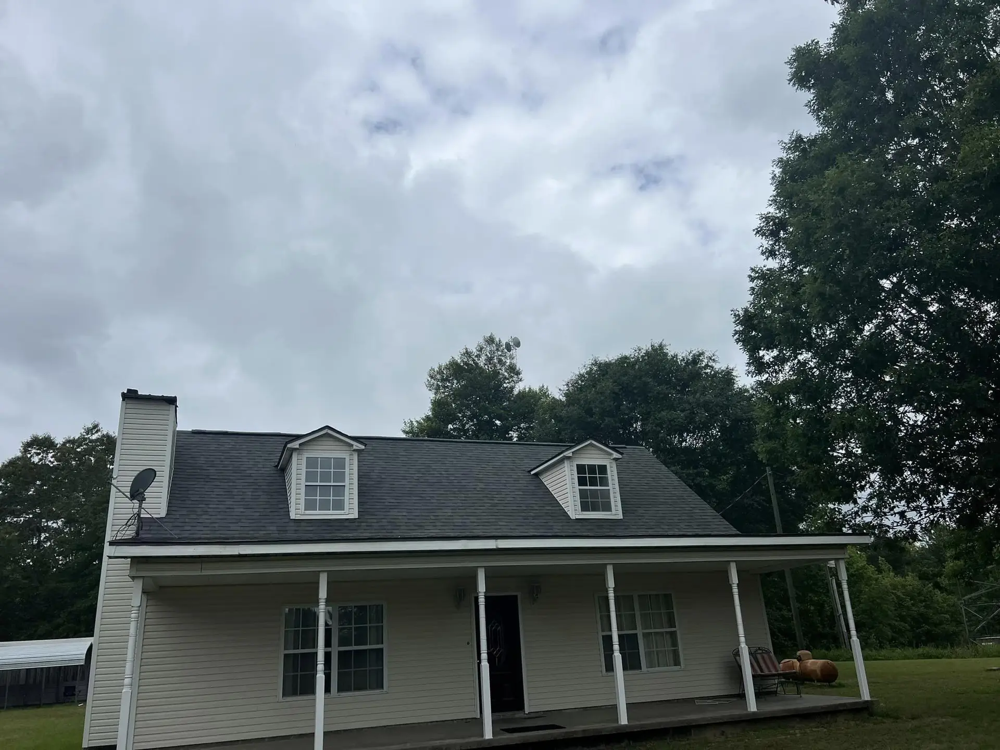
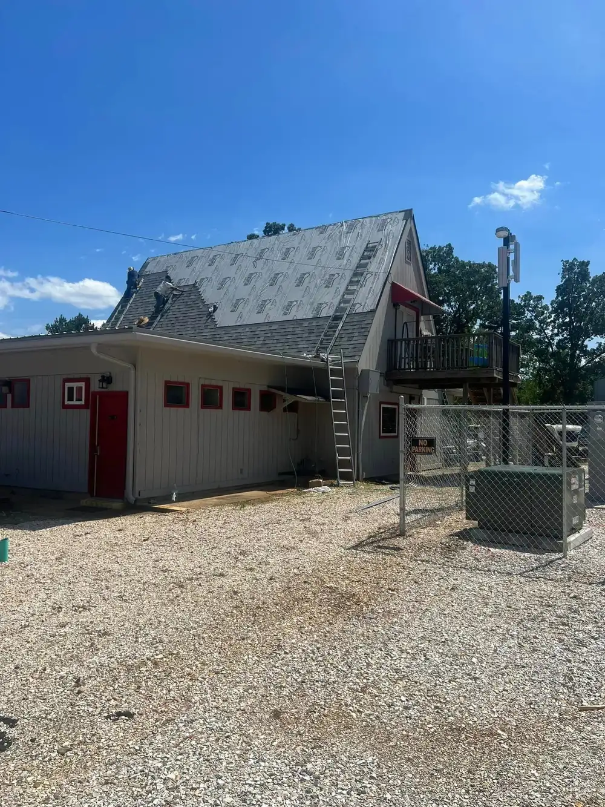
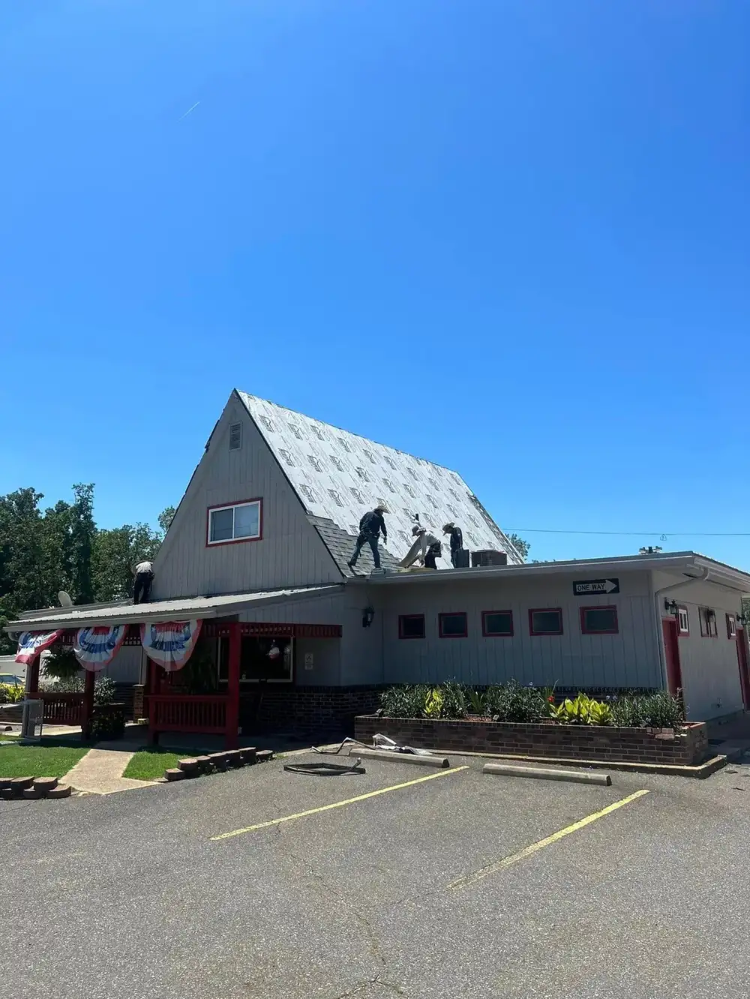
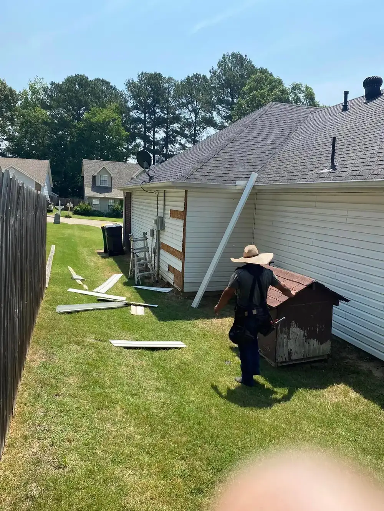

Residential roofing
Standing seam, flat or shingle roofs for Bismarck homeowners, installed or repaired with premium materials from reputable suppliers.
See residential roofingServices
All servicesResidential roofingCommercial roofingPaintingSheetrock repairSidingConcreteDeck buildsDeck painting and stainingAreas
All areasBismarck, ARHot Springs, ARDe Roche, ARLambert, ARDe Gray, ARRed Oak, ARPine Bluff, ARLittle Rock, ARArkadelphia, ARRussellville, ARBenton, ARTexarkana, ARCompany
About usGalleryBlogFAQsContact
Bismarck and Hot Springs, AR
Residential and commercial roofing and construction across central Arkansas. Call for a free estimate and inspection.







If your roof had damage with the recent ice storm that happened, I highly recommend jj & Son's Roofing and Construction for your repair or new roof . It's been about 7 or 8 months since they did our metal roof and it's still in impecable shape … They truly stand behind their work.
This company was very professional during the project of replacing damaged roof/shingles. They also made needed adjustments to my gutters in order for them to work correctly. After the project, the crew did excellent job of cleaning and removing all debris. I would recommend JJ & Son's without hesitation.
Impeccable work! Contentious and very fair pricing. Was a one day job and I highly recommend!
I highly recommend JJ & Son’s Roofing and Construction. They are prompt, very dependable, and do excellent work.
From shingles to metal and all types of flat roofs, our licensed, bonded and insured team handles roofing, gutters, siding and more. We approach each roof as if it were our own.
Standing seam, flat or shingle roofs for Bismarck homeowners, installed or repaired with premium materials from reputable suppliers.
See residential roofingInstallation and repair of shingle, flat, standing seam and gutter systems for business properties. Shingle roofing systems carry a lifetime warranty.
See commercial roofingWe provide 24-hour emergency roofing response across central Arkansas, including Bismarck, Hot Springs and Arkadelphia. We can tarp and secure your roof right after storm or hail damage, document the damage for your insurance claim, and schedule full repairs or replacement.
Our central location in Bismarck, AR allows us to serve all of central Arkansas.
Bismarck, AR 71929
Call (501) 467-4496Get directionsMissing shingles, granule loss, sagging sections, and water stains on interior ceilings are common signs. Arkansas's storm seasons accelerate wear, so annual inspections help catch damage before it becomes a costly replacement.
Architectural asphalt shingles are the most popular choice for Arkansas homes due to their durability against heat, humidity, and hail. Impact-resistant options provide added protection in areas prone to severe storms and high winds.
Commercial roofs are typically flat or low-slope and use systems like TPO or modified bitumen rather than shingles. They require specialized installation techniques and different drainage considerations than standard residential pitched roofs.
Twice a year is the general recommendation — once in spring and once in fall. Regular inspections catch membrane splits, ponding water, and flashing failures early, significantly extending the lifespan of a commercial roof.
Call (501) 467-4496 or send us a message. Family-run roofing and construction in Bismarck and Hot Springs, AR.